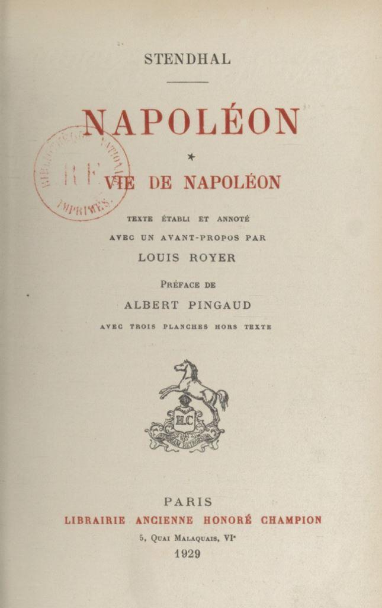
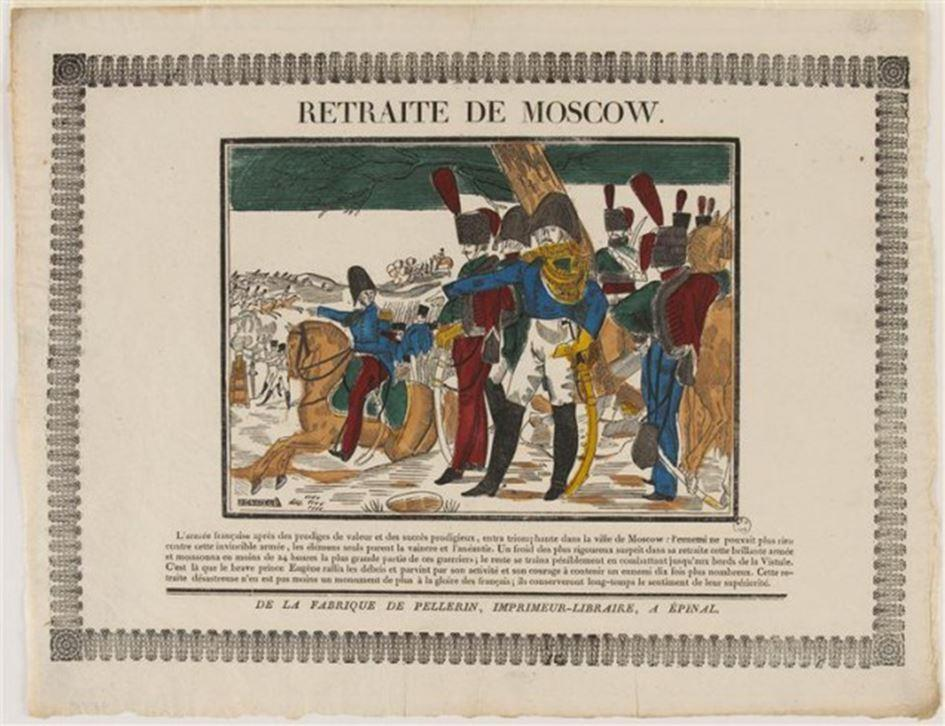
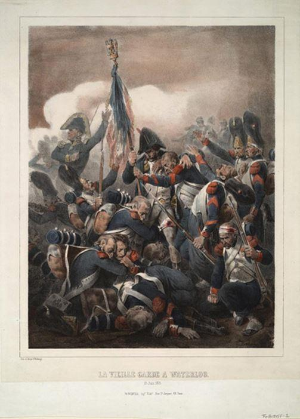
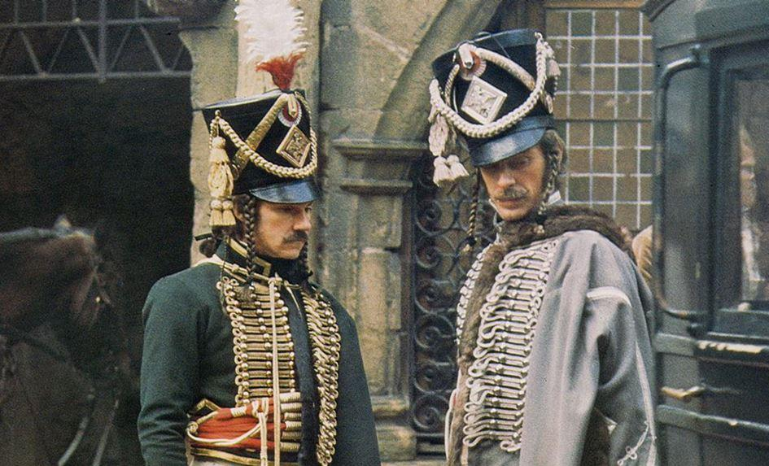

Que Napoléon ait lui-même, à différentes reprises, voulu tout contrôler – à commencer par son image – ne fait évidemment aucun doute. Pour ce qui concerne plus particulièrement les écrits, les différents bulletins de la Grande Armée se chargèrent d’offrir un regard sur les épisodes car c’était là le document officiel censé demeurer à la postérité.
Ce que l’Empereur soupçonnait alors mais n’imaginait guère, c’était l’engouement qui s’emparerait des écrivains français eux-mêmes pour cette terrible épreuve. Avant même Tolstoï et son célèbre Guerre et Paix, nombreux furent ceux qui, à travers leurs écrits, relatèrent la longue campagne puis l’interminable retraite qui s’ensuivit.
L’un des premiers, Stendhal, avait l’avantage d’être présent sur place en sa qualité de « responsable chargé de la Direction générale des approvisionnements de réserve dans les trois gouvernements de Smolensk, Mohilev et Vitebsk ». Aux côté des personnalités comme Daru notamment, il constata avec effroi les décisions appliquées et surtout la stratégie adoptée.
Il écrit notamment, dans Vie de Napoléon (p. 147) : « Après la bataille de la Moskova, Napoléon pouvait faire prendre son quartier d’hiver à l’armée et rétablir la Pologne, ce qui était le véritable but de la guerre ; il y était parvenu presque sans coup férir. Par vanité et pour effacer ses malheurs en Espagne, il voulut prendre Moscou. Cette imprudence n’aurait été suivie d’aucun inconvénient s’il ne fût resté que vingt jours au Kremlin ; mais son génie politique, toujours si médiocre, lui fit perdre son armée. Arrivé le 14 septembre 1812, Napoléon aurait dû en partir le 1er octobre. Il se laissa leurrer de l’espoir de faire la paix ; l’héroïque brûlement de Moscou, s’il l’eut évacué, devenait alors ridicule. »
Les témoignages de Marbot, de Bourgogne, de Coignet et de tant d’autres soldats, en particulier les souvenirs du sous-officier Jean-Michel Chevalier (conservés à la bibliothèque Thiers à Paris, fonds Frédéric Masson), offrent un regard précis et circonstancié des événements, dont ils ont été les acteurs et, parfois, les victimes.
Parallèlement à ces premiers textes, les gravures, estampes, imageries populaires (dont celles de Pellerin à Épinal comptent parmi les plus célèbres) révèlent toutes les réalités connues, à la fois au sein des combats et des épisodes vécus.
Les peintres Charlet et Raffet accompagnent l’opération en proposant des scènes qui, bientôt, seront également reproduites dans tous les manuels scolaires et les ouvrages spécialisés.
La génération qui suit n’use pas du même registre. L’importance se situe davantage dans le ressenti ou l’expression des sentiments, que dans une quelconque authenticité. La réinterprétation passe par des instants forts. Tel est notamment le cas de Balzac qui fait raconter, dans son Médecin de campagne : « Arrive la Bérézina. Ici, mes amis, l’on peut vous affirmer par ce qu’il y a de plus sacré ; sur l’honneur, que, depuis qu’il y a des hommes, jamais, au grand jamais, ne s’était vu pareille fricassée d’armée, de voitures, d’artillerie, dans de pareille neige, sous un ciel pareillement ingrat. Le canon des fusils brûlait la main, si vous y touchiez, tant il était froid. C’est là que l’armée a été sauvée par les pontonniers, qui se sont trouvés solides au poste, et où s’est parfaitement comporté Gondrin, le seul vivant des gens assez entêtés pour se mettre à l’eau afin de bâtir les ponts sur lesquels l’armée a passé, et se sauver des Russes qui avaient encore du respect pour la grande armée, rapport aux victoires. Et, dit-il en montrant Gondrin qui le regardait avec l’attention particulière aux sourds, Gondrin est un troupier fini, un troupier d’honneur même, qui mérite vos plus grands égards. J’ai vu, reprit-il, l’empereur debout près du pont, immobile, n’ayant point froid. Était-ce encore naturel ? Il regardait la perte de ses trésors, de ses amis, de ses vieux Égyptiens. Bah ! tout y passait, les femmes, les fourgons, l’artillerie, tout était consommé, mangé, ruiné. Les plus courageux gardaient les aigles ; parce que les aigles, voyez-vous, c’était la France, c’était tout vous autres, c’était l’honneur du civil et du militaire qui devait rester pur et ne pas baisser la tête à cause du froid. On ne se réchauffait guère que près de l’empereur, puisque quand il était en danger, nous accourions, gelés, nous qui ne nous arrêtions pas pour tendre la main à des amis. »
À la suite de l’auteur du Colonel Chabert qui a déjà porté son regard sur l’épopée napoléonienne au moyen de destins individuels marquants, Victor Hugo n’est pas en reste. Dans l’Expiation, ses fameux vers résonnent encore : « Il neigeait. On était vaincu par sa conquête. / Pour la première fois l’aigle baissait la tête. / […] L’empereur se tourna vers Dieu ; l’homme de gloire / Trembla ; Napoléon comprit qu’il expiait / Quelque chose peut-être, et, livide, inquiet, / Devant ses légions sur la neige semées : / “Est-ce le châtiment, dit-il. Dieu des armées ?” / Alors il s’entendit appeler par son nom / Et quelqu’un qui parlait dans l’ombre lui dit : Non. »
Les romans de la comtesse de Ségur – dont il faut rappeler que le père était le gouverneur de la cité moscovite ayant ordonné l’incendie à l’arrivée des Français – se diffusent dans les foyers. Et au début du XXe siècle, d’autres qu’elle se proposent de laisser parler leur imagination.
Peintres et graveurs, scupteurs et écrivains alimentent alors la nouvelle attraction qui, déjà, balaie tout sur son passage : le cinématographe. Pour la campagne de Russie, de nombreuses adapatations du roman de Tolstoï sont portés à l’écran. Outre les films de King Vidor à Hollywood avec Audrey Hepburn, Henry Fonda et Mel Ferrer, c’est évidemment celui de Sergueï Bondartchouk (sur près de huit heures) qui marque les esprits et continue, plus de cinquante après, de faire le bonheur des cinéphiles, en Russie mais aussi en France.
Les réalisateurs hexagonaux ne sont pas en reste, offrant à leur tour leurs créations. Au festival de Cannes, la projection des Duellistes de Ridley Scott en 1977 vaut à son metteur en scène un prix spécial du jury.
La campagne de Russie elle-même gagne aussi les travaux des historiens. À la suite d’Eugène Tarlé dont les ouvrages connaissent un grand succès en France, plusieurs études poursuivent les éditions d’Adolphe Thiers, Frédéric Masson, Louis Madelin et, plus récemment, de Jean Mistler, André Castelot, Jean Tulard.
Dernier avatar des grands écrivains et emboitant le pas de Hugo dont il reprend le premier vers, Patrick Rambaud, dans son roman éponyme Il neigeait, s’intéresse moins aux héros du passé et met désormais en valeur les personnages secondaires au milieu de l’histoire. Il écrit : « Les traîneurs, cavaliers démontés aux bottes entourées de chiffons, voltigeurs, hussards fagotés comme des épouvantails, portaient des barbes touffues où les flocons se fixaient. La nuit, ils volaient des chevaux qu’ils montaient avec l’idée de les dévorer plus tard. Si une voiture cassait une roue, ils la flambaient, se disposaient en cercle sous des bâches et des couvertures; ces tentes s’alourdissaient de neige. Madame Aurore possédait une casserole. Elle en devenait précieuse. Au réveil, sortie de sa tente, elle chercha un cheval valide, en repéra plusieurs, attachés à un bosquet. Leurs propriétaires ne la voient pas venir, ils tournent le dos, les visages exposés au feu de leur bivouac. Madame Aurore prend son canif, l’insinue entre les côtes de l’un des animaux, doucement elle entaille la chair et recueille le sang dans son récipient en fer-blanc. Sur les dernières braises d’un fourgon dépiauté qui les a réchauffés cette nuit, elle fait cuire le sang et offre ce boudin, quelques bouchées à chacun. »
On le constate, la campagne de Russie n’a pas fini d’inspirer les auteurs. Leurs créations sert toujours de catharsis à une population profondément marquée par le drame.

Partager cette page